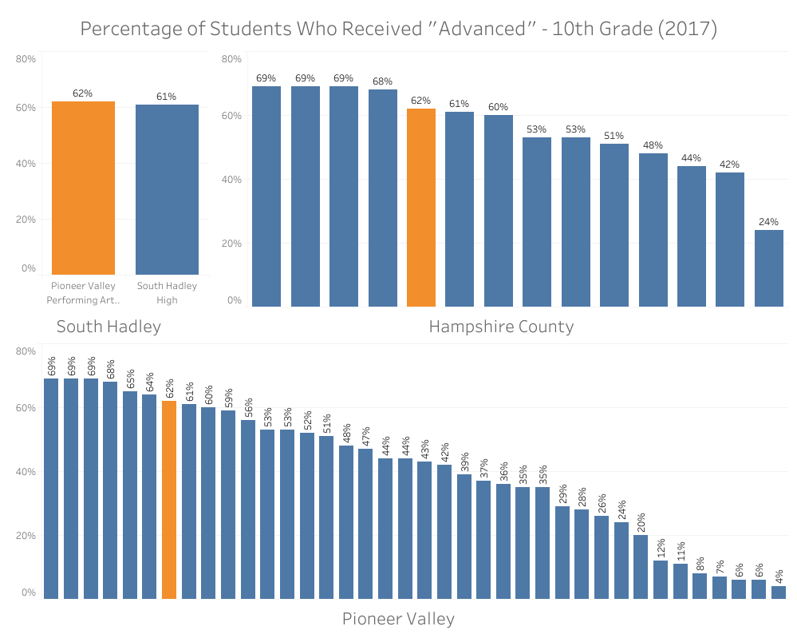

In Spring, my mathematics department discussed our students' recently released MCAS scores (grades 7, 8 and 10). MCAS scores are important to consider due to their implications about student learning. Students are also required to pass MCAS tests in tenth grade in order to graduate from high school. The state of Massachusetts uses MCAS scores as benchmarks not only for student learning but for schools' performance as well. The MCAS test changed in 2017--the old, pre-2017 version is now referred to as the "Legacy" test and the newer version is called the "Next Generation" test. I took publicly available data regarding 2017 and 2023 MCAS scores from a .csv file online as well as from my team and the MA Department of Education’s website for this project. My goal was to use the data to compare my school, Pioneer Valley Performing Arts, to the rest of the state in terms of mathematics MCAS scores.
To get an idea of how PVPA students did, I imported the data into Tableau and created some bar graphs where the x- and y-axes are “achievement level” and “percentage of students.” I started with a PVPA-specific graph and then made similar graphs for the statewide averages. In Tableau, I had to add table calculations to get percentage outputs from the PVPA raw score inputs, import percentage values directly from the DoE data, and add some dashboard formatting to make the visualizations easier to read.
In the 2023 visualizations, we can tell from the graphs that PVPA has a consistently lower percentage of students who exceeded expectations. For those who met expectations, the percentages of seventh and tenth grade students are quite similar between PVPA and the state, considering that the PVPA seventh graders are only about five percent fewer than the state average and there are about four percent more PVPA tenth graders than statewide at this achievement level. In eighth grade, however, we see a whopping twenty-five percent fewer PVPA students meeting expectations than the state. Another striking difference between PVPA and the state is the greater percentage of PVPA students across all three grade levels who only partially met expectations. At this achievement level, the state has forty or forty-two percent of its students in each grade level while PVPA students make up about fifty-six, sixty-seven, and forty-seven percent in seventh, eighth, and tenth grade respectively.
Looking at the overall shape of the distributions, we can see that all six of the 2023 graphs (PVPA as well as state) appear to be skewed left. For tenth grade in particular, both the PVPA and state graphs are shaped much closer to a normal distribution. This suggests that generally more seventh and eighth grade students scored on the low end. Meanwhile, tenth graders’ scores are centered more symmetrically around the middle, falling mostly in "meeting expectations" or "partially meeting expectations." While more tenth graders are passing the test in comparison to the middle schoolers, they’re generally not achieving exceptionally high (or exceptionally low).
With the 2017 data, I set out to match my 2023 visualizations and make similar interpretations. Here, I had to set up calculated fields in Tableau to compute the percentages of students at each achievement level. I coded in some basic averages e.g.
SUM([MCAS 10thGrade Math A #])/(SUM([MCAS 10thGrade Math A #])+SUM([MCAS 10thGrade Math NI #])+SUM([MCAS 10thGrade Math P #])+SUM([MCAS 10thGrade Math W/F #]))
and used “format number” to make Tableau output the results as percentages before formatting the graphs into concise dashboards.
This data appears to be confounding. When comparing PVPA and the state, the 2023 data follows a loosely similar shape and here it does not. First, we can see in the PVPA data that seventh and eighth grade have a similar, more centered shape that is much different from that of tenth grade which is skewed right. The tenth grade scores tend to include significantly more on the higher end, most likely due to the fact that passing is a requirement for graduation. This trend can be seen in the 2023 data too. Crucially, another factor at play here is the difference in the tests themselves: the Next Generation MCAS test made its 2017 debut only in grades 3-8, while tenth graders took the Legacy test. Therefore, we should expect to see a difference in performance between the middle school and high school scores, such as fewer high-end middle school scores resulting in a skew left. We saw this clearly in the 2023 statewide data and we can see it here in the 2017 PVPA data. But the 2017 statewide data doesn’t follow that pattern. Instead, the middle school graphs have the same shape as the high school graph. They’re much more dense on the high end than we should anticipate. Furthermore, when we compare PVPA to the state, the tenth grade graphs are quite similar despite the considerable differences in the middle school graphs.
So, the middle school data raises some red flags. I took a closer look at the 2017 data to find out why. I noticed that my .csv file data source has the middle school data recorded in terms of Legacy scores (advanced, proficient, needs improvement, and warning/failing), but every middle schooler across the state took the Next Generation test that year, not the Legacy test. To get to the bottom of this, I went to the source and dug through the MA DoE website to find some 2017 test score data. What I found didn’t match up to what I had been using in the .csv file for seventh and eighth grade, but did match up for tenth grade, meaning the 2017 middle school data I worked with is flawed. The incorrect values are actually similar to the DoE’s Legacy test data for previous years, though. Perhaps the compiler of this data source calculated some averages across a few previous years and used those for 2017 instead of using the next generation test scores. This might have been done in order to keep some standardization amongst the data, but I can only guess. MCAS scores in 2015-2018 are difficult to compare, after all, what with the test changing from Legacy to PARCC to Next Generation and not always in ways that are consistent.
One of the things we spoke about in our department meetings was the amount of students that scored at the highest level. PVPA students had fewer of these scores than the state, which was especially true for middle school. It was also true in 2017, except for tenth grade. For tenth grade, PVPA had a slightly higher percentage than the state average.
I wondered where PVPA lands more locally. I used the 2017 data available to me to compare PVPA on three levels: town (South Hadley), county (Hampshire), and region (Pioneer Valley). I created graphs where x represents “schools” and y represents “percent of students.” Filtering the “town” measure in Tableau created a list of checkboxes. This allowed me to show the percentages for whichever towns I needed for any of the three local levels. Before making my inferences, I made the graphs more presentable with formatting such as excluding null values, sorting, highlighting, normalizing axis scaling, and removing clutter from headers, captions, and titles.
For the percentage of students who received the highest score, “advanced,” the graphs show PVPA as being on par with South Hadley. It was in the top five out of fourteen schools in Hampshire County, and it had the seventh highest percentage out of thirty-eight schools in the Pioneer Valley. In each level, the difference in percentage between the top school and PVPA was only seven percent.
I also calculated the Hampshire County average and Pioneer Valley average by writing SQL queries like the one below.
SELECT AVG("% MCAS_10thGrade_Math_A") AS average_advanced_10th_hcounty
FROM publicschools
WHERE "School Name" IN ('Amherst Regional High', 'Belchertown High', ...);
The outputs tell us that PVPA had about seven percent more students at the highest level than the Hampshire County average. It had about twenty-one percent more than the Pioneer Valley average. PVPA might have had a comparatively lower percentage at the highest score in 2023, but certainly not in 2017.
I learned quite a lot from working on this project. Not only did I learn the basics of Tableau and GitHub, having never used them before, but I got an opportunity to test out some of the SQL queries and aggregate functions I learned previously. I got to brush up on html while I was at it. All the while, my report had practical applications in that I gained some insights on my team’s efficacy in terms of test results. Additionally, some of the analyses I described in my report were applied to department conversations and decisions.
I was disheartened to find out about the inaccuracies in the data source after having already started to analyze it. Something I would consider in continuing this project is making direct amendments to the data flaws. I might reach out to the person who posted the .csv file to find out why the inaccuracies exist. Were they in fact using averages to get around some of the inherent difficulties in working with the MCAS scores? Was it just an oversight? In any event, there are plenty of ways I could uncover more insights and continue my analysis.
I could search for more data to apply to this particular project, such as a large list of 2023 raw scores. I could analyze the high and low ends of the 2023 scores like I did with the 2017 scores. This would naturally allow for more inferences via a parallel comparison. I could edit the .csv file manually and run a fine-toothed comb through the data source to thoroughly clean it and rigorously check its validity. I could search for other, alternative sources of MCAS data to use instead of or in tandem with what I already had. I’d return to my 2017 dashboards in order to ensure their accuracy. Without the inaccuracies, I might have already been able to go a bit further applying aggregate functions, descriptive statistics, and more to the 2017 data.
In the future, I want to learn to write more SQL queries to compute measures of center other than just a mean, such as a median. There are other concepts that I understand well, thanks to my background in mathematics, and I want to learn to apply them in languages like SQL and visualize them with something like Tableau. For instance, I want to use my understanding of linear regression because I already know from past work that it’s a powerful tool for analyzing trends in data. There’s a lot I can learn and create with data and I’m excited to keep growing.